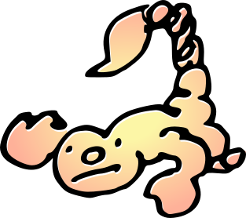
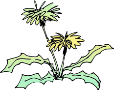

Ambrose Sturgill
ambrose.sturgill02@gmail.com
Passionate and friendly software engineer.
BS in Software Engineering
Humboldt County
Languages: HTML, CSS, JS, Python, C++, C, SQL.
Frameworks/Tools: GitHub, Flask, Django, SQLite, JUnit.
Ambrose Sturgill
ambrose.sturgill02@gmail.com
Passionate and friendly software engineer.
BS in Software Engineering
Humboldt County

Languages: HTML, CSS, JS, Python, C++, C, SQL.
Frameworks/Tools: GitHub, Flask, Django, SQLite, JUnit.
Jan. 2025 - May 2025
Election Transparency Viewer
Made for the Elections Transparency Project
Contributors: Ambrose Sturgill, Brennan Duffy, Alexander Georgopolous
Languages used: HTML5, CSS3, JavaScript, Python
Frameworks/Tools used: Django, SQLite
The Election Transparency Viewer is a locally hosted web application developed to assist the process of scanning
ballots by providing a live view of scanned ballots for the Election Transparency Project, a nonprofit volunteer
run organization dedicated to the verification of the electoral process for Humboldt County.
The application uses the Django web framework and integrates a SQLite database controlled by the ballot scanning machine. Along with assisting in the application's development on all layers, my role included the design of the user interface and the development of the image viewer, which was implemented using vanilla Javascript.
Dec. 2025 - Jan. 2026
Cactus Portfolio Website
Made for Ancient Tech Cultivation
Contributors: Ambrose Sturgill
Languages used: HTML5, CSS3, JavaScript, YAML, XML
Frameworks/Tools used: GitHub Pages, GitHub Actions
A simple gallery website for listing cactus. Responsive design for appealing layout on all screen sizes. Website content is dynamically generated from local XML file. Listings are managed through GitHub Actions Workflows, which modify the XML file and can generate multiple resolutions of images for the responsive design.
April 2026
SoundScape
Made for the Hackathon for Social Good 2026
Visit at the DevPost submission page or the continued development GitHub repository
Contributors: Ambrose Sturgill, D'marco Ahumada, Raul Cano Canul, Tyler James
Languages used: HTML5, CSS3, Python
Frameworks/Tools used: Flask, iNaturalist API
SoundScape allows users to listen to recordings of wildlife from across the California coast using observation data sourced from iNaturalist. The application presents real wildlife observations and audio recordings.